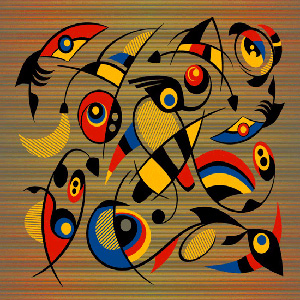

Joan Miró
Joan Miró i Ferrà (Barcelona, 20. travnja 1893. - Palma de Mallorca, 25. prosinca 1983.), španjolsko-katalonski slikar, kipar i keramički umjetnik apstraktno-nadrealističkih djela lirskog karaktera.
Životopis

Rođen je kao sin zlatara i urara i kćeri uglednog stolara u Barceloni, a odrastao je u Barceloni i obiteljskoj vikendici u Mont-Roig del Campu kraj Tarragone. Sa sedam godina je krenuo u školu i dobiva prvu poduku iz risanja. 1907. godine, na nagovor oca, upisuje poslovnu školu, ali u isto vrijeme ide na umjetničku akademiju La Escuela de la Lonja. U razdoblju od 1910. do 1911. radio je kao knjigovođa u jednoj kemijskoj tvrtki. Iste godine prvi put izlaže svoja djela na općinskoj izložbi u Barceloni. Nakon nervnog sloma napušta knjigovodstvo i potpuno se posvećuje umjetnosti 1912. god., te se pridružuje umjetničkom „Udruženju sv. Luke” (Cercle Artístic de Sant Lluc). Prvu samostalnu izložbu organizirao je 1918. u Dalmauovoj galeriji u Barceloni gdje su njegova djela ismijana[1]. God. 1920. Dalmau mu pokušava organizirati izložbu u Parizu, gdje je Miró upoznao Picassa.
Ženi se 1929. god. s Pillar Juncosu Iglesias, a godinu dana kasnije dobiva i kćer koju je nazvao Dolores po svojoj mlađoj sestri. Tijekom života nekoliko je puta mijenjao mjesto stanovanja. Za njegova života, 1976. godine, osnovana je Fundacija Juan Miró u Barceloni. Umro je na Božić 1983. u Mallorci, a sahranjen je u obiteljskoj grobnici groblja Montjuic u Barceloni. Za sobom je ostavio opus od oko 11.000 radova.
Djela

Miróove rane slike, do prije 1920. godine, odlikuju se širokim spektrom utjecaja, počevši od fovizma i kubizma, pa sve do romaničkog katalonskog slikarstva. U Parizu je ostvario kontakt s umjetnicima bliskima nadrealizmu i njegov stil se počeo uoblikovati u lirskoj fantaziji iracionalnih formi koje predstavlja preko apstraktnih kompozicija. Tada počinje stvarati forme koje su rezultat igre umjetnikove mašte, humora i jedinstvene distorzije realnosti, koristeći uvrnute organske oblike povezane u cjelinu preko veoma neobičnih geometrijskih bidimenzionalnih konstrukcija i oblika. Često je otvoreno izražavao prezir spram konvencionalnih metoda slikanja, smatrajući ih simbolima buržoaskog društva. Njegova djela, ispričana raskošnim bojama i bogatom simbolikom jezika podsvjesnog, otkrivaju da iza očaravajuće nevinosti njegova izričaja leži duboka briga za ljudski rod te snažan osjećaj osobnog i nacionalnog identiteta.
Mala galerija

